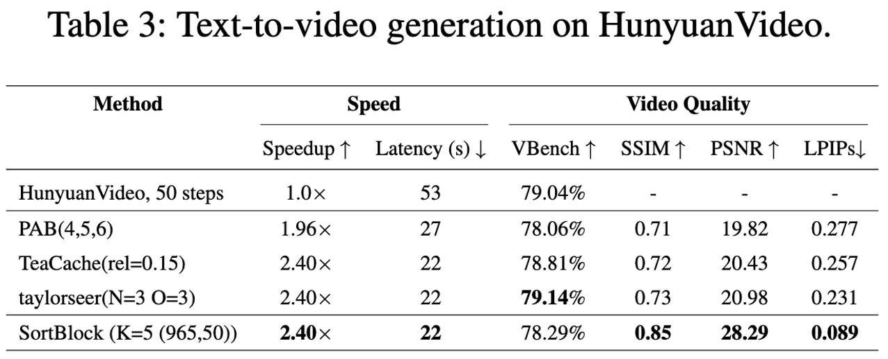
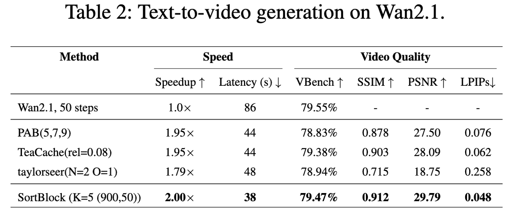
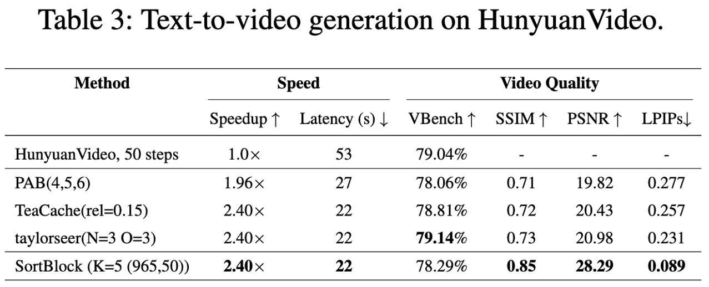
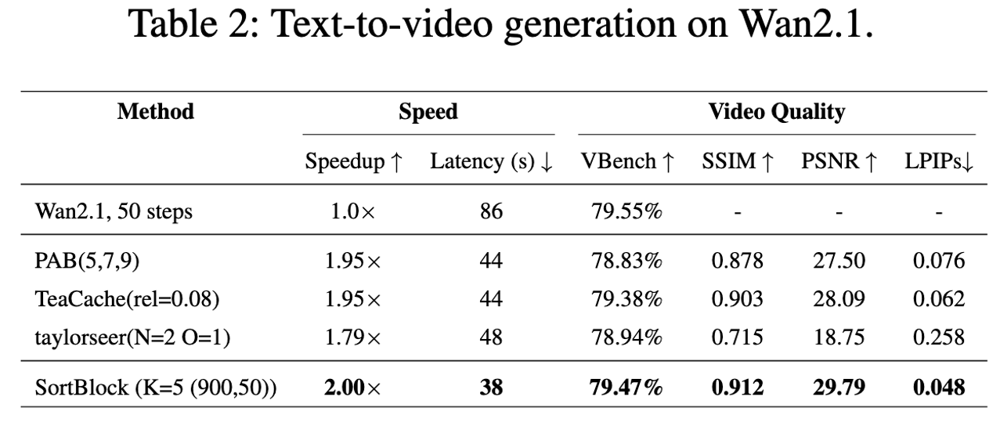

Figure 1: Sortblock accelerates DiT models Flux, Wan2.1 and HunyuanVideo by 200%, 226% and 240% respectively, while maintaining fidelity and high consistency with the original image.
Figure 1: Sortblock accelerates DiT models Flux, Wan2.1 and HunyuanVideo by 200%, 226% and 240% respectively, while maintaining fidelity and high consistency with the original image.
Diffusion Transformers (DiTs) have demonstrated remarkable generative capabilities, particularly benefiting from Transformer architectures that enhance visual and artistic fidelity. However, their inherently sequential denoising process results in high inference latency, limiting their deployment in real-time scenarios. Existing training-free acceleration approaches typically reuse intermediate features at fixed timesteps or layers, overlooking the evolving semantic focus across denoising stages and Transformer blocks.To address this, we propose Sortblock, a training-free inference acceleration framework that dynamically caches block-wise features based on their similarity across adjacent timesteps. By ranking the evolution of residuals, Sortblock adaptively determines a recomputation ratio, selectively skipping redundant computations while preserving generation quality. Furthermore, we incorporate a lightweight linear prediction mechanism to reduce accumulated errors in skipped blocks.Extensive experiments across various tasks and DiT architectures demonstrate that Sortblock achieves over 200% inference speedup with minimal degradation in output quality, offering an effective and generalizable solution for accelerating diffusion-based generative models.
To leverage this sparsity, Sortblock selectively updates only a small subset of DiT blocks that exhibit the most significant changes between adjacent steps. The challenge lies in efficiently and accurately identifying these DiT blocks. As shown in Fig. 2, we compute the cosine similarity between the input-output changes of DiT blocks at step K and step K+1. By utilizing the cosine similarity between the input-output changes of each DiT block, we identify those DiT blocks with the most substantial changes. Only these selected DiT blocks undergo complete feature recomputation and cache updates.
 





BibTex Code Here